Lecture Notes 05: Adders and the ALU
Outline
This class we'll discuss:
- Recap: Logic representations
- Building other operations
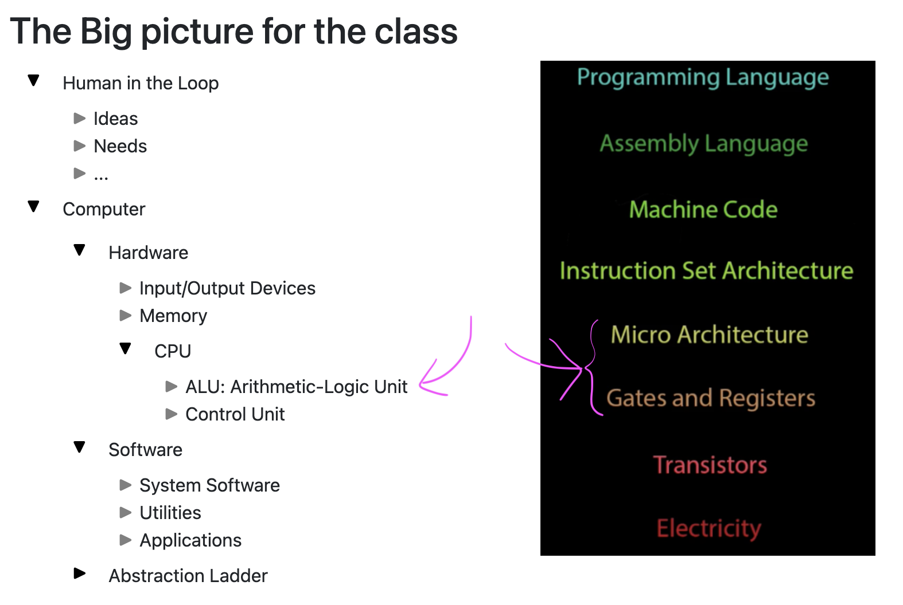
Recap: Logic representation
recall that we can represent a logical process based on inputs as
- A Truth Table (which shows inputs and outputs for a function);
- Algebraic notation: Mathematical description of the combination of operators and symbols that make the funciton;
- Physical (real or simulated) Circuit Diagram
Activity 1 :[3 minutes] : Create the diagram and truth table for the following circuit:
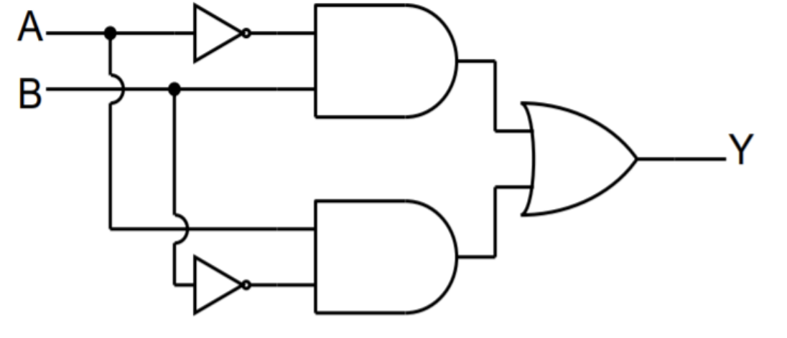
Note that:
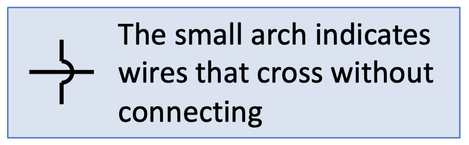
Building other operations
We can combine basic gates to construct more complex circuits that complete more complex operations.
The trick is to combine these to produce operations that are useful to us.
We are already capable of producing logical operations from simble bit-to-bit inputs.
Now, we'll try to use logic to produce arithmetic operations
Adding two binary numbers: from logic to arithmetic
As we've seen before, we can add two binary numbers one bit at a time and obtain a result:
\[
\begin{aligned}
\texttt{carry:}\mathit{1011} \texttt{ }&\\
\texttt{A: } 1011&\\
+ \texttt{ B: } 1001& \\
\hline
\texttt{Out: }10100&
\end{aligned}
\]
For clarity, I've removed the "0b" from each number. they are all binary, though.
As seen above, we can use the typical arithmetic rules only on base 2.
We can add two bits together (one bit a from A, and one bit b from B) using the following rules:
| a |
b |
Carry |
Out |
| 0 |
0 |
0 |
0 |
| 0 |
1 |
0 |
1 |
| 1 |
0 |
0 |
1 |
| 1 |
1 |
1 |
0 |
Now the question is: how can we use the
logical components (gates) to produce these results?
Logic to Arithmetic: The Half Adder
If you look carefully at the table, you can see that the column for
Out is exactly the same as the output for the
XOR gate!
Also, you can see that the column for
Carry is exactly the same as the output for the
AND gate!
Therefore, we can solve the
bit-to-bit addition by using those two gates.
Since this "Only solves a one-to-one" bit addition and does not actually include the
more valuable bits,
this is called a
Half Adder
Activity 1 :[2 minutes] : Let's build the Half-Adder:
Draw a circuit using
logic.ly so that:
- One output is equivalent to the "Out" for the table shown above
- The other output is equivalent to the "Carry" for the table shown above
:
(Wait; then Click)
The result is the following circuit:
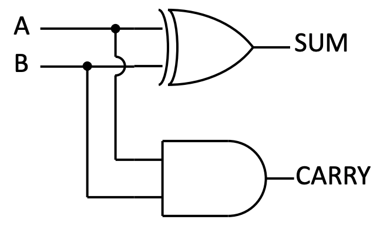
The next step is to
Use the carry value for the next bit-to-bit addition.
Logic to Arithmetic: The Full Adder
The only difference from the half adder to the full adder is that a full adder
includes a third possible input: a
carry!
The new table looks like this:
| Carry-in |
a |
b |
Carry-out |
Out |
| 0 |
0 |
0 |
0 |
0 |
| 0 |
0 |
1 |
0 |
1 |
| 0 |
1 |
0 |
0 |
1 |
| 0 |
1 |
1 |
1 |
0 |
| 1 |
0 |
0 |
0 |
1 |
| 1 |
0 |
1 |
1 |
0 |
| 1 |
1 |
0 |
1 |
0 |
| 1 |
1 |
1 |
1 |
1 |
Activity 2 :[2 minutes] : How would you build the Full-Adder:
answer:
(Wait; then Click)
Let's do it using the usual steps:
- define the inputs: a, b, and a carry-in
- define the outputs: sum(or out), and a carry-out
- we know that a+b can be solved with a Half adder
- We now need to also add the carry-in.. so: simply add the output of a+b with the carry-in using another half adder!
- lastly, the totalcarry-out is 1 if the first half-adder's carry is 1 or if the second half-adder's carry is 1
The result is the following circuit:
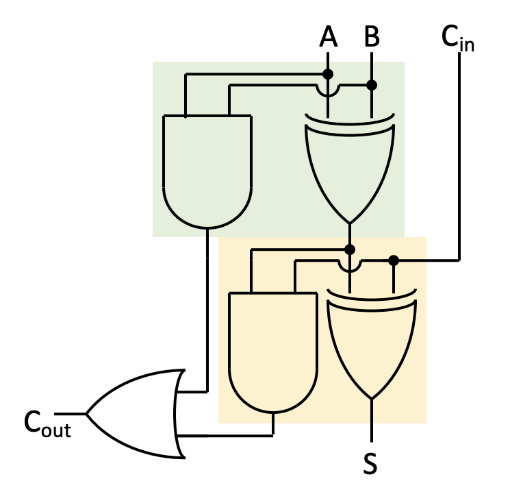
Activity 3 :[2 minutes] : Let's build the Full-Adder:
Modify the half-adder circuit using that you built in
logic.ly so that:
- The inputs are: a, b, and a carry-in.
- The sum output is equivalent to the "Out" for the table shown above
- The other output is equivalent to the "Carry" for the table shown above
- Try it out!
A multi-bit adder
Obtaining a result for the addition of two multi-bit numbers is the result of linking a sequence of full-adders:
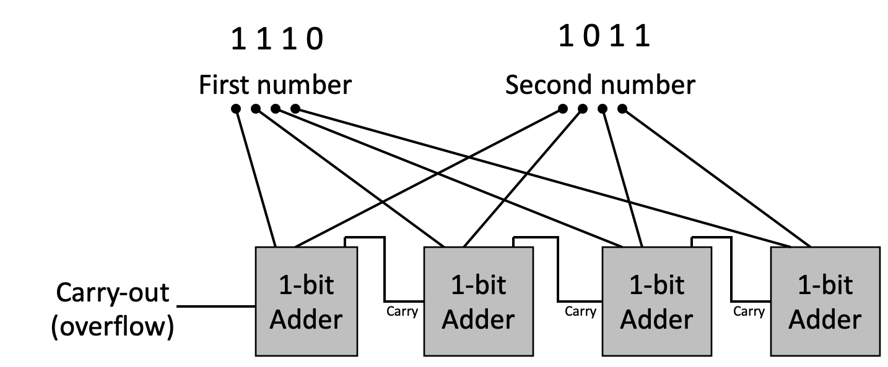
Note that the Least Significant Bit (LSB) is on the right and the Most Significant Bit (MSB) is on the left.
Activity 4 :[2 minutes] : Let's build a 2-bit Full-Adder:
Modify the full-adder circuit using that you built in
logic.ly so that:
- We have two full adders in a series where the first bit of two 2-bit numbers goes to the first full adder and the second bit (+the carry) goes to the second full adder.
- You can copy-paste sections of your circuit
- Try it out!
It should look like this:
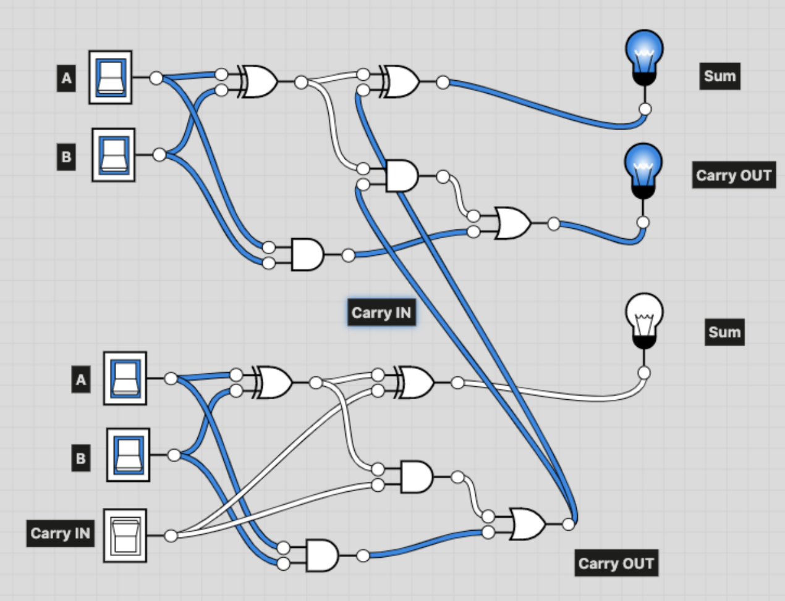
Real Circuits
There are small components that contain the classic logic gates: AND, XOR, NOT, etc.
They are called Integrated Circuits (IC) and are usually called "Chips".
Some of the most sed ones are for Prototyping: which is when you build "test" circuits which are larguer and slower (but easier to build and test) than the final product.
You can simply connect these to a power source and to some inputs, and link them together using wires to replicate the circuits we discussed above.
These are sold in "groups" and look like this (diagram on top, chip on bottom):
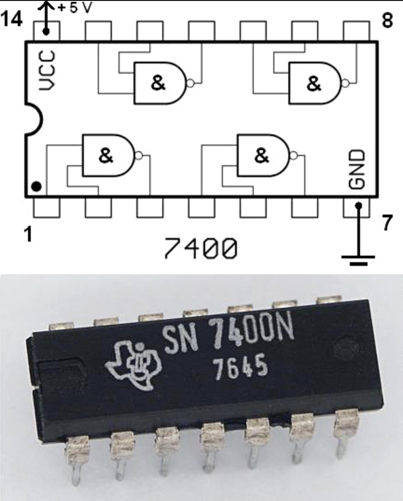
Data Sheets
A data sheet is just the document that comes wit an integrated circuit. It provides information on how it works and how to use it.
One should not fear a datasheet. It is your friend.
Here is an example of one (it does not bite).
Production Integrated Circuits
Production ICs are
Tiny. You could place thousands of them in the area covered by a single one of these prototype chips.
However, producing them is much harder so one usually builds prototypes or simulations first.
Once you've got the design working, you have the circuits "printed".
Modern computers are "general purpose" computers where their (printed IC) parts are mass produced.
Real (Simulated) Circuits
Before Next class, please join Tinkercad:
Creating a TinkerCad account
Go to
tinkercad.com/join and create a free account.
If you have a Google account, you can simply login using your Google credentials (preferred).
The TinkerCad Dashboard
The following is what you should see in your TinkerCad Dashboard.
Note that you should select the
Circuits tab on the left in order to see your circuits (see the arrow).
To start with, you'll have no circuits but you will have a small tutorial to teach you how to use the interface.
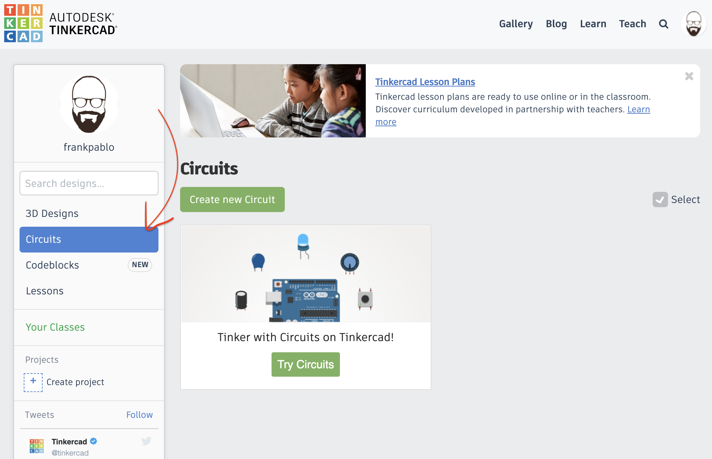
The TinkerCad tutorials
Now, let's complete a series of tutorials to learn to use TinkerCad Circuits.
Exercise:
Start the tutorials by pressing Try Circuits. Once each tutorial is completed, you can continue to the next one by pressing the continue button that will appear.
Complete the following tutorials:
- "Getting Started"
- "Editing Components"
- "Wiring Components"
- "Adding Components"
You can always go back to your dashboard by pressing the TinkerCad logo:
Also, if you log out and need to find the tutorials, you an use this link:
Circuits Tutorials
The Circuit Designer
As a final exercise in this Lab, let's perform a calculation, select the right components, and we'll build a simple circuit using wires, a breadboard, a battery , a resistor, and an LED.
First, go to your circuits dashboard an press the
Create new Circuit button.
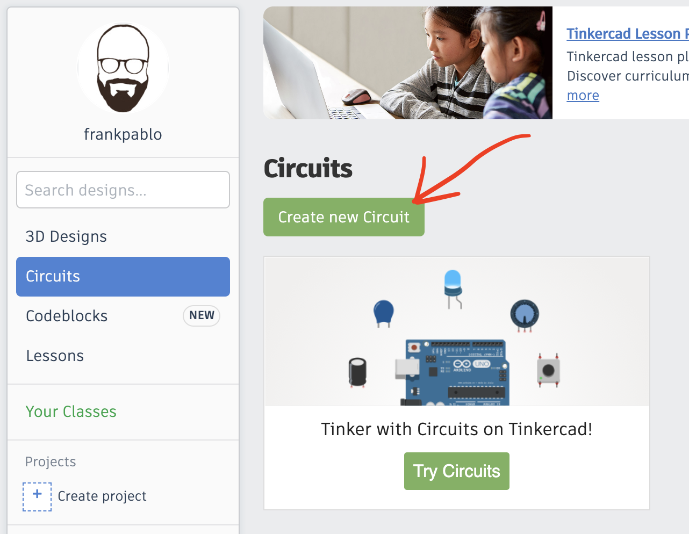
This will open the Circuit Designer.
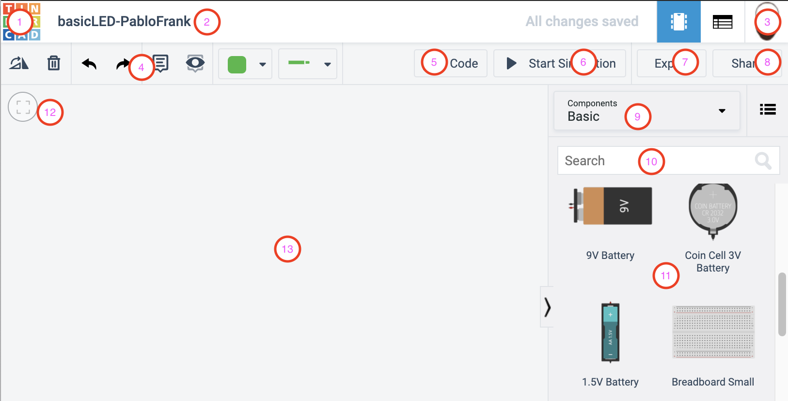
The following are the main important elements
- The TinkerCad Logo: Allows you to return to the Dashboard
- The Name of the circuit: This is assigned randomly at the start but should be changed right away.
- The Avatar for your account: make sure you are logged in!
- The Designer controls: you used these in the tutorials
- The Code tab: Opens the code for any programmable component (Next Module!)
- The Start Simulation button: starts the time and "physics" of the circuit. Remember to turn off when editing.
- Export button: lets you save the circuit in another format.
- Share button: will allow you to both Save a snapshot of your design at the current time or to invite someone else to tinker with it.
- Component List Category: it allows you to pick which "set" of components to search in
- Search bar: let's you search for components
- Components: you drag components from this location and into the Design area
- Center Circuit Button: Will scale the Design area to fit your components
- Design Area: you'll place and connect your components here
Once you've joined, follow this link:
AND-XOR
Before next class (Thursday 09/16)
[Due for everyone]
- Submit Homework 1 in Moodle before Wednesday 09/15 at 11:59
- Start making teams and choosing topics
read about
Signed number representation
1-Minute Debrief
Please fill this out before leaving: